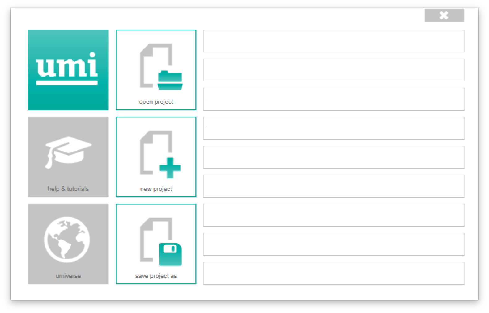

Umi | First steps¶
Requirements¶
Rhinoceros3D version 5-64 bit (Windows only)
Opening/Creating a project¶
When working with UMI projects, it is important to use the umi functions and NOT the Rhino commands for “Opening” and “Saving” a project. Umi creates it’s own file system (*.umi) which is a package containing all relevant files and data needed for a project.
To create a new project, simply click on the UMI button and select “open project” or “new project” and browser to the folder location of your choice. Once a project has been opened.
The UMI menu
Important: Working units must be in Meters. To change them, in Rhino, go to File — Properties — Units — Model Units : Change to “meters”